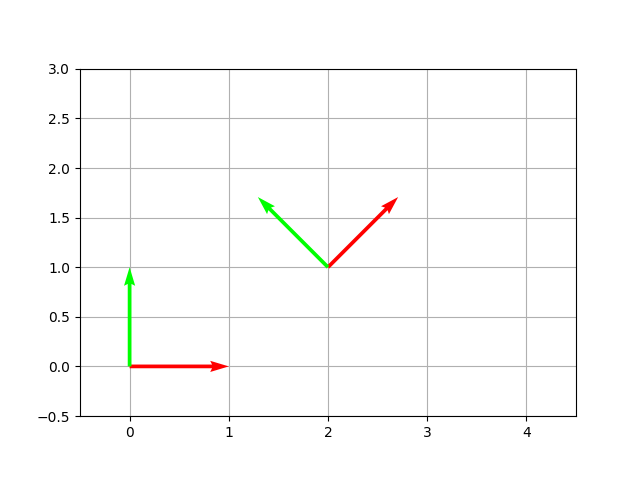

Coordinate Systems (2D)
CoordinateSystem2D
A 2D coordinate system defined by two Direction2D axes and an origin Point2D. Internally it builds a 3×3 affine matrix used for basis-change transforms.
import plane.CoordinateSystem2D
import plane.elements.Direction2D
import plane.elements.Point2D
import units.Angle
// Standard Cartesian system (x right, y up, origin at 0,0)
val standard = CoordinateSystem2D.MAIN_2D_COORDINATE_SYSTEM
// Rotated system — axes tilted 45°
val rotated = CoordinateSystem2D(
xDirection = Direction2D(1.0, 1.0), // auto-normalized
yDirection = Direction2D(-1.0, 1.0),
origin = Point2D(2.0, 0.0)
)Properties
| Member | Description |
|---|---|
xDirection: Direction2D |
x-axis unit direction |
yDirection: Direction2D |
y-axis unit direction |
origin: Point2D |
origin of the system |
affineMatrix: SimpleMatrix |
3×3 affine transform matrix |
Rotation
Returns a new CoordinateSystem2D with its axes and origin rotated:
val sys = CoordinateSystem2D.MAIN_2D_COORDINATE_SYSTEM
val rotated = sys.rotate(Angle.Degrees(30.0))The plot below shows the standard Cartesian system (red/green at origin) alongside a custom 45°-rotated system anchored at (2, 1):

Changing basis
Any Entity2D can be re-expressed in a different coordinate system using changeBasis():
val systemA = CoordinateSystem2D(
xDirection = Direction2D(1.0, 0.0),
yDirection = Direction2D(0.0, 1.0),
origin = Point2D(1.0, 0.0)
)
val systemB = CoordinateSystem2D.MAIN_2D_COORDINATE_SYSTEM
val point = Point2D(2.0, 1.0) // as written in systemA
// Express the same point in systemB
val pointInB = point.changeBasis(asWrittenIn = systemA, to = systemB)Internally this computes:
systemB.affineMatrix⁻¹ × systemA.affineMatrix × point.affineMatrixPractical example — expressing a polygon in a tilted frame
import plane.Polygon2D
import plane.CoordinateSystem2D
import plane.elements.Direction2D
import plane.elements.Point2D
import units.Angle
val square = Polygon2D(listOf(
Point2D(0.0, 0.0),
Point2D(1.0, 0.0),
Point2D(1.0, 1.0),
Point2D(0.0, 1.0)
))
val tiltedSystem = CoordinateSystem2D(
xDirection = Direction2D(1.0, 1.0),
yDirection = Direction2D(-1.0, 1.0),
origin = Point2D(0.5, 0.5)
)
val squareInTilted = square.changeBasis(
asWrittenIn = CoordinateSystem2D.MAIN_2D_COORDINATE_SYSTEM,
to = tiltedSystem
)